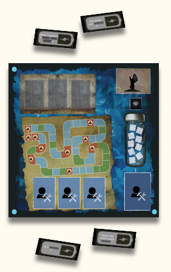

Community History through AR

Project Abstract:
As gentrification transforms urban communities, the cultural heritage and lived experiences of areas like Harlem, New York, are at risk of being lost. Community History Through AR is an Augmented Reality (AR) application designed to preserve the historical and cultural significance of the Harlem region while fostering civic engagement.
The project empowers residents to rediscover their community’s history by interacting with AR-enhanced narratives of landmarks, historical buildings, and community stories. The application also integrates features inspired by the Emoverse platform, enabling users to leave AR assets, comments, and stories at various locations.
The project explores the following questions:
- How can AR be effectively utilized to preserve community history?
- What are the key UI/UX design considerations for developing a community-centered AR application?
Responsibilities:
- Conducted formative studies to understand the historical context and current challenges of Harlem through field research, archival analysis, and community engagement with Harlem residents.
- Collaborated with the NSF Center for Smart Streetscapes and the 125th Street Business Improvement District to ensure the application aligns with community needs and objectives.
- Designed multi-layered wireframes using Figma, Adobe Illustrator, and Balsamiq, integrating features such as:
- Heatmap functionality similar to Snapchat’s heatmaps for storytelling and locating key landmarks.
- Interactive maps focusing on themes like health, safety, history, and art in Harlem.
- Created 3D models of significant historic buildings using Blender and prototyped AR features in Unity, enabling users to visualize how buildings have changed over time.
- Proposed integrating Emoverse, where users can leave comments, stories, or AR objects for others to interact with, building a sense of shared history and connection.
- Led a pilot study with 10 participants using a beta mobile application to gather feedback on AR functionalities and UI/UX design.
Key Features:
- Developed a prototype in Figma showcasing core application features, such as heatmaps, AR storytelling, and user interactions.
- Built a beta AR prototype that allows users to view historical narratives and visual changes in landmarks by pointing their phone cameras at specific locations.
- Collected valuable insights through pilot studies, emphasizing AR’s potential for bridging physical spaces with their historical narratives while identifying UI/UX improvements.
- Established a foundation for community engagement by incorporating feedback from Harlem residents and local organizations.
Tech Stack:
- Programming Languages:Python
- Libraries:OpenCV, TensorFlow, Keras
- Dataset:NUS hand posture dataset
Future Scope:
- Refine AR features to enhance user experience, focusing on ease of navigation, accessibility, and interactive storytelling.
- Conduct formal user studies with Harlem residents to guide iterative development and ensure the platform aligns with their needs.
- Publish findings in a research paper exploring the intersection of AR technology and cultural preservation, highlighting its potential impact.
Related links:
- Refine AR features to enhance user experience, focusing on ease of navigation, accessibility, and interactive storytelling.
- Conduct formal user studies with Harlem residents to guide iterative development and ensure the platform aligns with their needs.
- Publish findings in a research paper exploring the intersection of AR technology and cultural preservation, highlighting its potential impact.